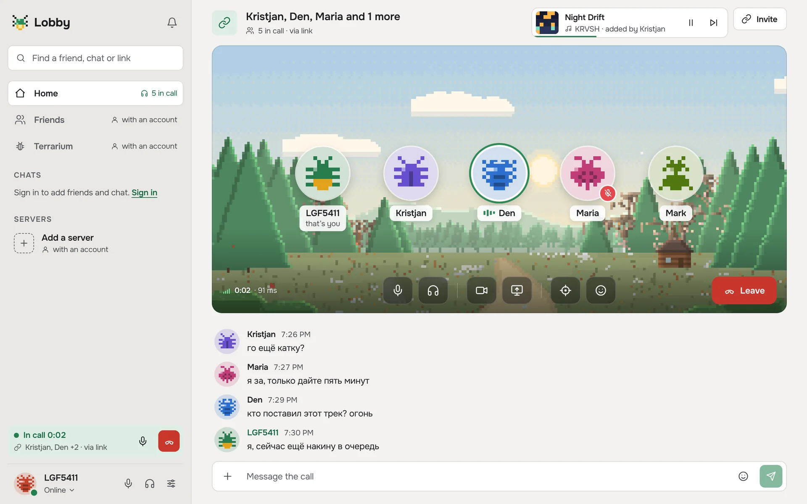
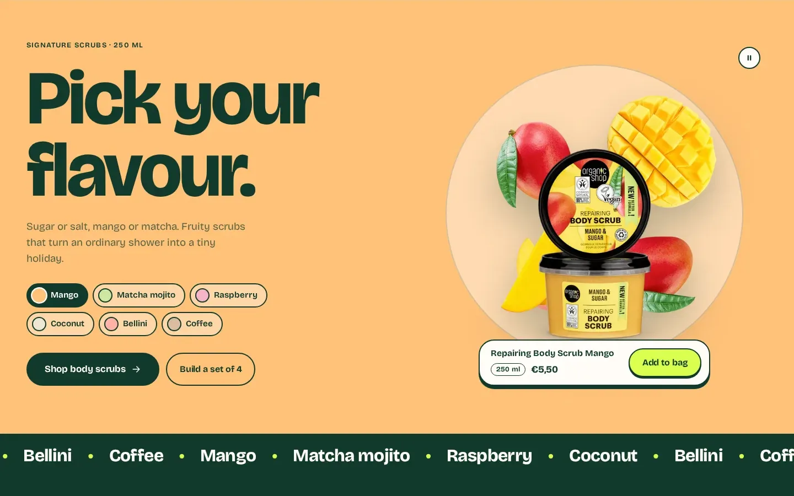
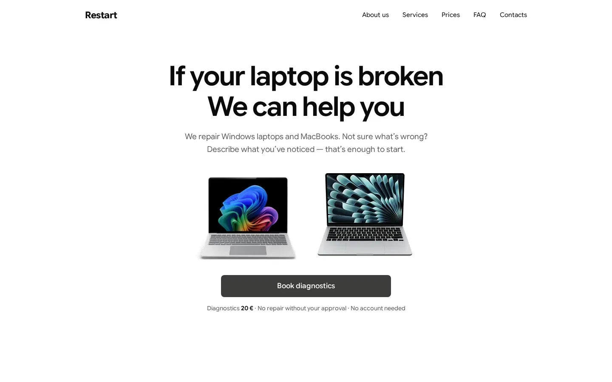

Junior Product Designer · Tallinn
I designed Lobby, a voice app my friends and I talk in. I design interfaces for apps and websites and test them as working prototypes.
Looking for a junior position or an internship, in Tallinn or remote. Two projects to start with are right below.
Available nowEstonian, English, Ukrainian, Russian
Start here1 of 2
Lobby
Voice chat where friends hear the same music
- My part
- Product concept, call and music scenarios, UI design, testing with friends.
- Status
- Version 0.14, in testing with friends.

Start here2 of 2
Bolt
Website concept: see the price of a ride before installing the app
- My part
- UX audit of eight pages, page structure and content, visual direction in Bolt’s style, prototype review.
- Status
- Independent concept. Not tested with users.
More work
Five more projects, in the same format: what it is, my part, where it stands.


